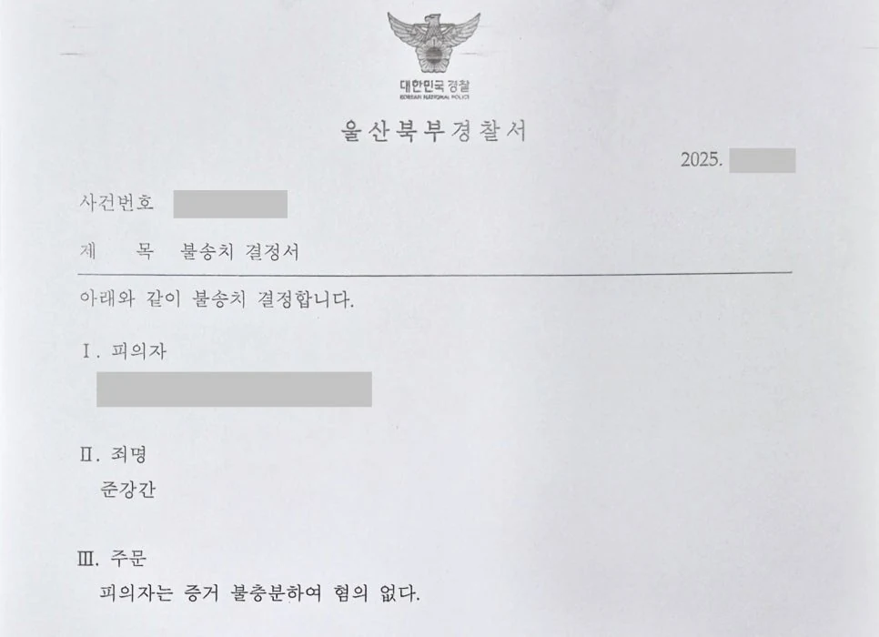

핵심 결과
준강간 사건은 초기에 매우 불리하게 흘러갈 수 있습니다.
고소인이 “술에 취해 항거불능 상태였다”고 주장하면 수사기관은 피의자를 강하게 압박하는 경우가 많습니다.
이번 사건도 핵심 카카오톡 대화가 대부분 삭제되어 있었습니다.
겉으로 보면 의뢰인에게 불리한 상황이었습니다.
하지만 법무법인 우린은 진술 싸움에만 머물지 않았습니다.
CCTV, 동선, 시간대, 결제 내역 등 객관적 자료를 모아 고소인의 항거불능 주장을 반박했습니다.
최종 결과는 불송치 결정, 혐의없음이었습니다.
| 구분 | 내용 |
|---|---|
| 사건 분야 | 준강간 |
| 고소인 주장 | 만취로 인한 심신상실 또는 항거불능 |
| 불리한 상황 | 핵심 카카오톡 대화 대부분 삭제 |
| 핵심 증거 | CCTV, 이동 동선, 시간대, 결제 내역, 현장 정황 |
| 주요 대응 | 진술 다툼이 아닌 객관적 사실관계 재구성 |
| 최종 결과 | 불송치, 혐의없음 |
사건 개요
의뢰인은 술집에서 고소인을 처음 만났습니다.
두 사람은 자연스럽게 대화를 나누었고, 이후 숙박업소로 이동했습니다.
의뢰인 입장에서는 서로 호감이 있었고 합의하에 이루어진 관계였습니다.
하지만 며칠 뒤 경찰 연락을 받았습니다.
준강간 혐의로 고소가 접수되었다는 내용이었습니다.
고소인은 “술에 많이 취해 심신상실 또는 항거불능 상태였다”고 주장했습니다.
문제는 의뢰인에게 유리한 카카오톡 대화가 대부분 삭제되어 있었다는 점입니다.
의뢰인에게 불리했던 조건
- 두 사람이 만난 지 얼마 되지 않은 상태였습니다.
- 서로 호감을 나누었던 카카오톡 대화가 대부분 삭제되어 있었습니다.
- 고소인은 항거불능 상태였다고 일관되게 주장했습니다.
- 성범죄 사건 특성상 진술 대 진술 구도로 흐를 위험이 컸습니다.
이 상태에서 단순히 “합의였다”고만 말하면 방어가 어려울 수 있었습니다.
준강간 사건에서 중요한 쟁점
준강간 사건의 핵심은 고소인이 당시 실제로 항거불능 상태였는지입니다.
술을 마셨다는 사실만으로 바로 준강간이 인정되는 것은 아닙니다.
수사기관은 당시 상태를 여러 자료로 확인합니다.
| 확인 대상 | 의미 |
|---|---|
| 보행 상태 | 혼자 걷거나 이동할 수 있었는지 |
| 대화 내용 | 의사 표현이 가능했는지 |
| 이동 경위 | 숙박업소까지 어떻게 이동했는지 |
| 결제 및 출입 정황 | 스스로 행동한 흔적이 있는지 |
| CCTV | 만취 또는 부축 여부를 확인할 수 있는지 |
이번 사건은 카카오톡 대화가 삭제되어 있었기 때문에 다른 증거를 빠르게 찾아야 했습니다.
성범죄 사건은 시간이 지나면 CCTV와 현장 자료가 사라질 수 있습니다.
초기 대응이 늦어지면 억울함을 입증할 자료 자체가 없어질 수 있습니다.
해결 전략
1. 진술 싸움으로만 끌려가지 않게 했습니다
고소인의 진술과 의뢰인의 진술만 비교하는 구조가 되면 위험합니다.
그래서 사건을 객관적 자료 중심으로 다시 구성했습니다.
의뢰인의 기억에만 의존하지 않고, 당시 이동 경로와 시간대를 먼저 정리했습니다.
2. CCTV와 동선을 확보했습니다
두 사람이 만난 장소부터 숙박업소까지의 동선을 확인했습니다.
주변 CCTV와 현장 정황을 검토해 고소인이 스스로 걷고 이동할 수 있었는지 확인했습니다.
그 결과 고소인이 주장하는 항거불능 상태와 맞지 않는 정황을 찾아냈습니다.
3. 삭제된 카카오톡을 다른 증거로 보완했습니다
카카오톡 대화가 사라졌다고 해서 사건이 끝나는 것은 아닙니다.
결제 내역, 이동 시간, 숙박업소 출입 정황, 현장 주변 자료를 종합하면 당시 상황을 재구성할 수 있습니다.
이 자료들을 하나의 흐름으로 정리해 수사기관에 제출했습니다.
| 대응 단계 | 실제 진행 내용 |
|---|---|
| 1단계 | 고소 내용과 의뢰인 진술 비교 |
| 2단계 | 술집, 이동 경로, 숙박업소 동선 정리 |
| 3단계 | CCTV 및 현장 정황 확보 |
| 4단계 | 결제 내역과 시간대 분석 |
| 5단계 | 항거불능 주장과 맞지 않는 객관적 자료 정리 |
| 6단계 | 변호인 의견서로 불송치 필요성 제출 |
결과
수사기관은 제출된 자료를 검토했습니다.
고소인의 항거불능 주장을 그대로 믿기 어렵다고 판단했습니다.
결국 의뢰인에게는 불송치 결정, 혐의없음 처분이 내려졌습니다.
최종 결과
준강간 고소 사건에서 핵심 카카오톡 대화가 삭제된 불리한 상황이었지만, CCTV와 동선 분석 등 객관적 자료를 통해 불송치 결정을 받았습니다.
의뢰인은 억울하게 성범죄자로 낙인찍힐 위험에서 벗어날 수 있었습니다.
성범죄 사건은 초기 대응이 중요합니다
성범죄 사건은 초반 진술과 증거 확보가 매우 중요합니다.
특히 준강간 사건은 항거불능 여부가 쟁점이 됩니다.
그런데 CCTV는 시간이 지나면 삭제됩니다.
숙박업소, 술집, 주변 동선 자료도 늦게 움직이면 확보가 어려워집니다.
그래서 성범죄 고소를 당했다면 먼저 해야 할 일은 감정적으로 대응하는 것이 아닙니다.
당시 상황을 입증할 수 있는 객관적 자료를 빠르게 확보해야 합니다.
결론
준강간 사건은 단순히 “합의였다”고 주장하는 것만으로 부족할 수 있습니다.
고소인이 항거불능을 주장하면 수사기관은 피의자를 엄격하게 조사합니다.
이때 필요한 것은 감정적인 억울함 호소가 아닙니다.
동선, CCTV, 결제 내역, 대화 흐름, 현장 정황을 바탕으로 사건을 다시 구성하는 것입니다.
사무장·상담실장 없이 변호사가 직접 상담합니다
성범죄 사건은 첫 대응이 결과를 크게 바꿀 수 있습니다.
법무법인 우린은 강성수 변호사가 직접 상담하고, CCTV 확보와 경찰 조사 대응, 변호인 의견서 작성까지 직접 검토합니다.
억울한 상황이라면 먼저 사건 기록과 당시 동선을 정확히 확인해야 합니다.
이 글은 일반적인 법률 정보 제공을 위한 자료이며, 개별 사건의 결과를 보장하지 않습니다. 구체적인 대응은 사실관계와 증거에 따라 달라질 수 있습니다.